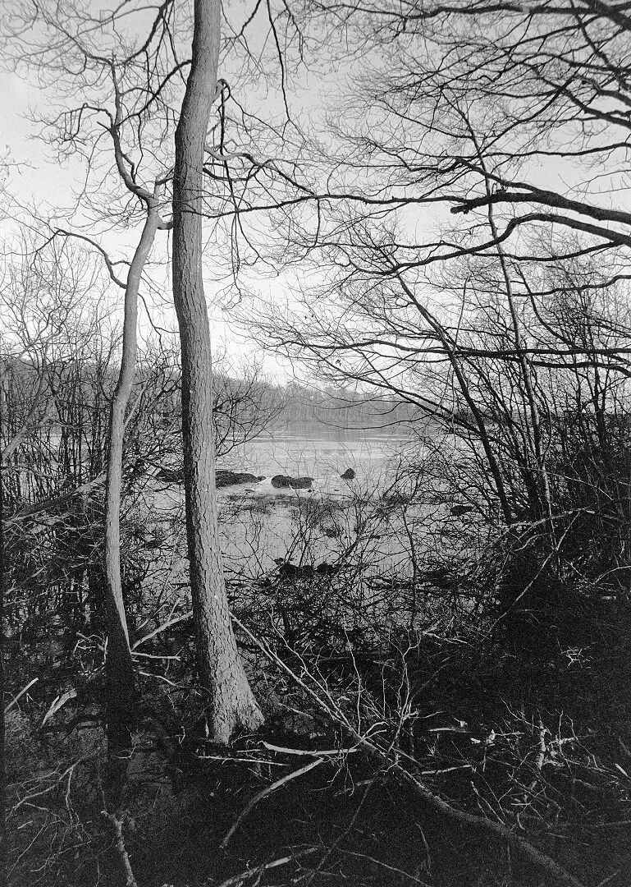
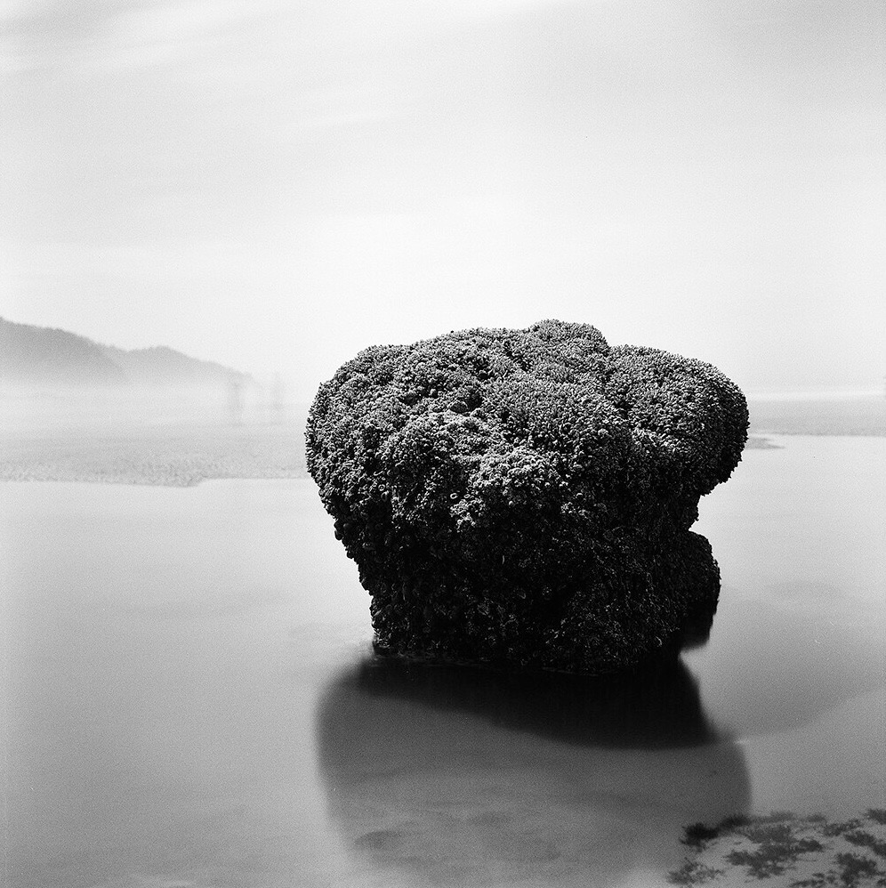

黑白胶卷怎么选？新手先回答这 3 个问题
如果你刚开始拍黑白，先别急着问「哪卷最好」——这是最没用的问法。因为「最好」取决于你在什么光线下拍、能不能接受拍废、以及你要的是干净还是味道。
所以这篇不给你排行榜。它给你一套3 个问题的判断法：按顺序问自己，答案会自己浮出来。

问题一：你主要在什么光线下拍？
这决定了你该买多少 ISO——也是新手最容易买错的地方。
大晴天、愿意慢慢拍 → 选 ISO 100–125：FP4 Plus、Acros II、Fomapan 100。颗粒细、细节多，但阴天和室内会很吃力。
什么都拍（街拍、旅行、阴天、室内） → 选 ISO 400：HP5 Plus、Tri-X 400、Kentmere 400、Rollei RPX 400。
只拍夜景、室内弱光、演出 → 才考虑 ISO 3200：Delta 3200、T-Max P3200。颗粒会明显，这是代价。
如果你只能买一卷，选 400——它覆盖面最广，白天收光圈、晚上开大光圈，基本都能拍。
问题二：你能接受多少「拍废」？
这问的是宽容度——曝光不准时，胶卷还能救回多少。
容错度高（差一两档也救得回来）：HP5 Plus、Tri-X 400、XP2 Super。新手推荐从这类开始，因为它们允许你犯错。
容错度低（曝光必须准）：Pan F Plus（ISO 50）、Fomapan 200、Adox CMS 20 II。画面更「讲究」，但翻车率也高。
特别提醒：CMS 20 II 这种 ISO 20 的卷，新手别碰——它反差极高、宽容度极窄，还要配专用显影液，圈里普遍把它归为「专家级、不适合日常」。
问题三：你要「干净」还是要「味道」？
同样是黑白，画面气质差别很大，这是最主观、也最该由你自己决定的一步。
干净现代（颗粒细、锐、层次利落）→ T-Max 100/400、Delta 100/400、Acros II。
传统颗粒（有年代感、有味道）→ Tri-X 400、HP5 Plus、Fomapan 系列、Kentmere 系列。
特殊效果（一眼就不一样）→ Ilford Ortho Plus 80（红色被压成深黑，人像肤色很戏剧）、Ilford SFX 200（加红外滤镜，树叶发白、天空压黑）。

问题四（很多人忽略）：你这卷准备交给谁冲？
这一条能直接决定你买什么。如果你的城市只有普通彩色冲印店（只做 C-41 工艺），那绝大多数黑白卷都冲不了。
这种情况下选 Ilford XP2 Super：它是少见的、可以用彩色 C-41 工艺冲洗的黑白卷（1981 年问世，长期是市面上唯一一款），宽容度像彩色负片一样大，冲扫店会把它当彩色卷处理，扫描也友好。
如果能找到黑白冲扫店、或打算自己冲，那上面所有卷都可以。顺便一句：传统颗粒卷最皮实，T 颗粒卷对显影更敏感，新手自己冲建议从传统颗粒开始。
结论：给新手的三条直路
① 想最不容易出错 → HP5 Plus：宽容度极大，官方给到 EI 3200 的迫冲指引，用户普遍反映「迫冲之后依然稳」，是很多人一辈子的主力卷。
② 想最省钱 → Kentmere 400 或 Fomapan 100：前者是 Ilford 母公司旗下的平价线，后者是 1921 年就建厂的捷克老牌，价格便宜但都有正经营业味道。
③ 只想送店冲 → XP2 Super。
以及三条弯路：别一开始就买停产的贵卷（批次和保存状况不可控）、别买 ISO 20 的专家卷、别一上来玩红外。这些等你拍完二三十卷再回来。
先选一卷能拍完的，再选一卷拍得好的。
评论区聊聊
你的第一卷黑白胶卷是什么？踩过什么坑？说出来，让后面的新手少走一次弯路。
新手最常选的这几卷，点开看规格与实拍
HP5 Plus Tri-X 400 Kentmere 400 XP2 Super Fomapan 100 Classic FP4 Plus